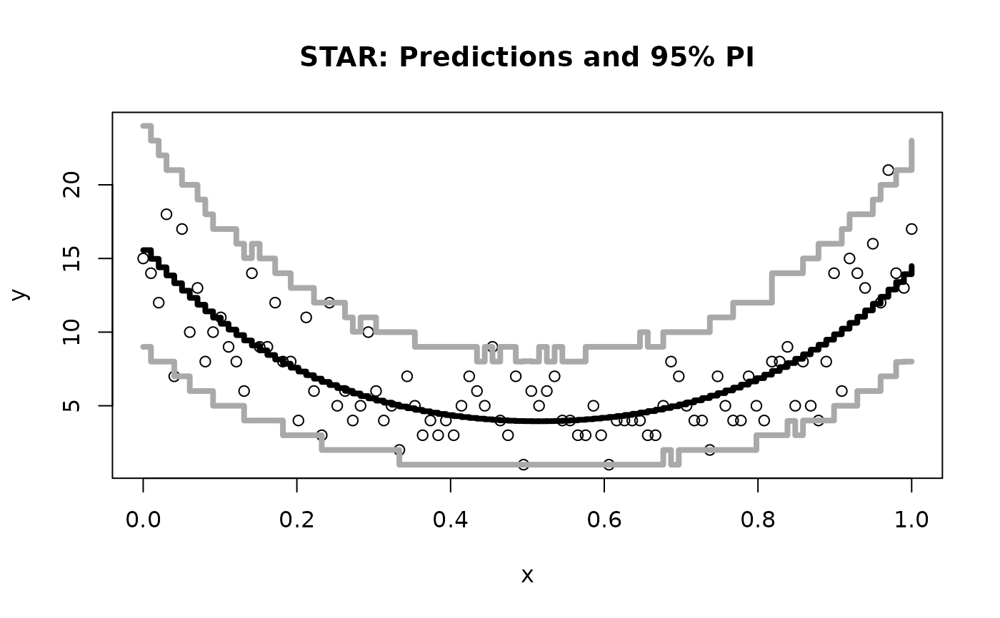

Outputs predicted values based on an lmstar fit and optionally prediction intervals based on the the (plug-in) predictive distribution for the STAR linear model
Usage
# S3 method for class 'lmstar'
predict(object, newdata = NULL, interval = FALSE, level = 0.95, N = 1000, ...)Arguments
- object
Object of class "lmstar" as output by
lm_star- newdata
An optional matrix/data frame in which to look for variables with which to predict. If omitted, the fitted values are used.
- interval
logical; whether or not to include prediction intervals (default FALSE)
- level
Level for prediction intervals
- N
number of Monte Carlo samples from the posterior predictive distribution used to approximate intervals; default is 1000
- ...
Ignored
Value
Either a a vector of predictions (if interval=FALSE) or a matrix of predictions and bounds with column names fit, lwr, and upr
Details
If interval=TRUE, then predict.lmstar uses a Monte Carlo approach to estimating the (plug-in)
predictive distribution for the STAR linear model. The algorithm iteratively samples
(i) the latent data given the observed data, (ii) the latent predictive data given the latent data from (i),
and (iii) (inverse) transforms and rounds the latent predictive data to obtain a
draw from the integer-valued predictive distribution.
The appropriate quantiles of these Monte Carlo draws are computed and reported as the prediction interval.
Note
The “plug-in" predictive distribution is a crude approximation. Better
approaches are available using the Bayesian models, e.g. blm_star, which provide samples
from the posterior predictive distribution.
For highly skewed responses, prediction intervals especially at lower levels may not include the predicted value itself, since the mean is often much larger than the median.
Examples
# Simulate data with count-valued response y:
x = seq(0, 1, length.out = 100)
y = rpois(n = length(x), lambda = exp(1.5 + 5*(x -.5)^2))
# Estimate model--assume a quadratic effect (better for illustration purposes)
fit = lm_star(y~x+I(x^2), transformation = 'sqrt')
#Compute the predictive draws for the test points (same as observed points here)
#Also compute intervals using plug-in predictive distribution
y_pred = predict(fit, interval=TRUE)
# Plot the results
plot(x, y, ylim = range(y, y_pred), main = 'STAR: Predictions and 95% PI')
lines(x,y_pred[,"fit"], col='black', type='s', lwd=4)
lines(x, y_pred[,"lwr"], col='darkgray', type='s', lwd=4)
lines(x, y_pred[,"upr"], col='darkgray', type='s', lwd=4)
